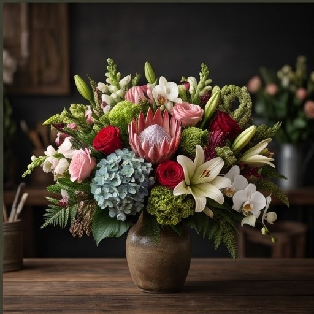
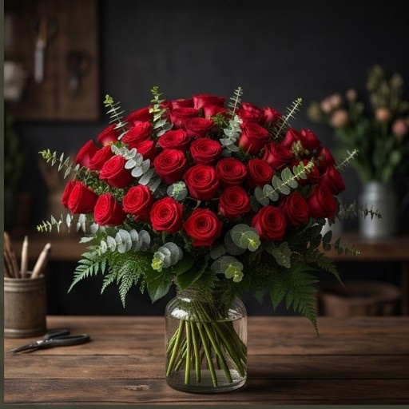
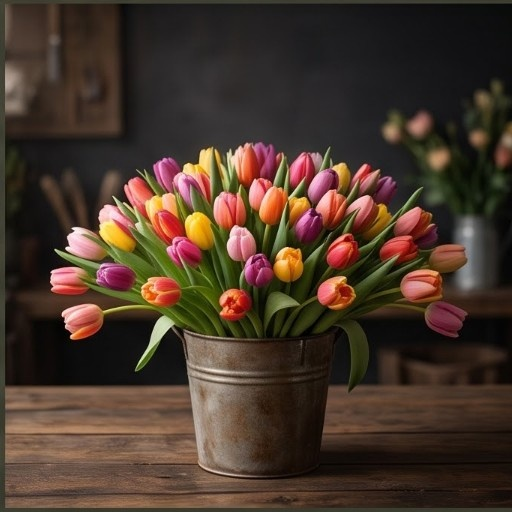
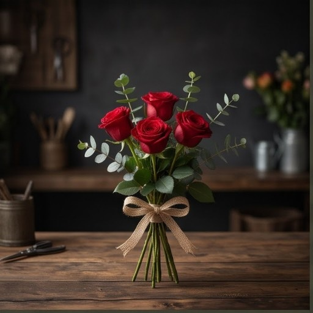
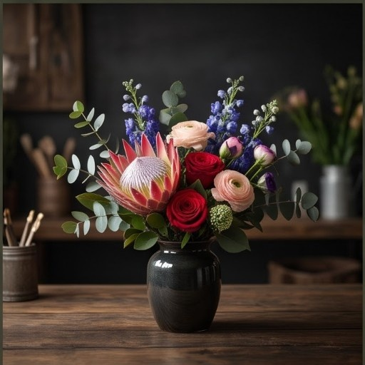

Żórawina k. Wrocławia
Twoja codzienna
dawka kwiatów.
Zielnik komponuje bukiety z tego, co danego dnia przywiozą lokalni hodowcy — jak świeża kawa, najlepszy zaraz po przygotowaniu.

Dziś polecamy
Bukiet dnia
Protea · róża · storczyk · hortensja · lilia
To, co danego dnia najlepiej pachnie w chłodni. Zawsze inny, zawsze świeży — zamawiany z dnia na dzień, jak poranna kawa.
245 zł
Zamów ten bukiet
Menu kwiatowe
Dziś w karcie
Dziewięć kompozycji dostępnych od ręki, w Żórawinie i okolicach Wrocławia.
Galeria
Prosto ze stołu, nie z renderu



